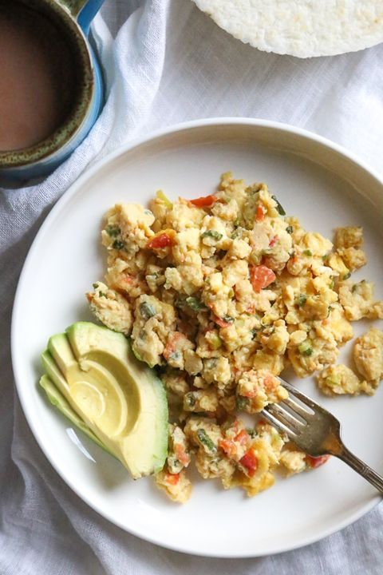

Huevos Pericos

Description
This dish is a traditional breakfast in Colombia, this is made with eggs, tomatoes and scallions
Ingredients
- Eggs
- Tomatoes
- Scallions
- Salt
- Oil
- Heat olive oil in a medium heat.
- Add the scallions and cook until they soften, about 4 to 5 minutes.
- Add the tomato and season with adobo or salt, cook until the liquid from the tomato evaporates, about 3 to 4 minutes.
- Add the beaten eggs to pan with more adobo or salt to taste and cook over medium heat, stirring a few times until just cooked.